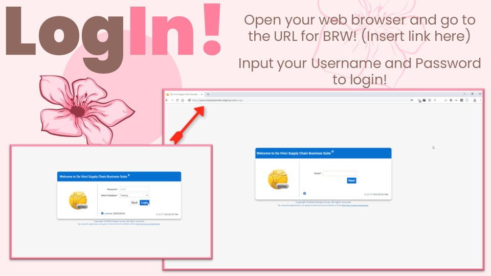

To begin using DaVinci WMS, open your web browser and navigate to the provided URL. You will then be prompted to enter your username and password to log in.
Once logged in, you will see the DaVinci dashboard. Familiarize yourself with this dashboard, as it provides an overview of key metrics such as occupancy, inventory,ect. The three-line dropdown menu located on the dashboard is crucial for navigating the system, allowing you to create, edit, and view various orders.
Lesson 2